Working note · derivation deck, July 10
A common starting point for a belief-propagation tracker is a factorization of the joint pdf of object states, measurements, and data-association variables. This note works through that factorization in four raw-measurement scenarios: point objects with a known and constant number of tracks, point objects with an unknown and varying number, and then the same two cases for extended objects that generate multiple measurements each. Each scenario ends in a product of local factors — the factor graph that message passing runs on. GrBP adds the manuscript appendix’s alternative: fix a preclustered partition, then infer group-to-target associations.
Converted from a set of (partly handwritten) derivation slides; the original scans are included at the end of each section for cross-checking.
The derivations share the same recipe; GrBP applies it after fixing the measurement groups:
The joint pdf is always structured the same way:
Chain rule with the standard structure:
Prior. Targets are independent a priori: $f(\ub{X}) = \prod_{i=1}^{n_t} f(\boldsymbol{x}_i)$.
Measurement term. Measurements claimed by targets follow the measurement model; the rest are clutter with density $f_c$. Multiplying and dividing by $f_c$ over the detected set turns the clutter product into a constant over all $m$ measurements:
$$ f(Z\mid \boldsymbol{a},\ub{X}) = \prod_{i\in\mathcal{D}} f(\boldsymbol{z}_{a_i}\mid\boldsymbol{x}_i) \prod_{j\in\mathcal{C}} f_c(\boldsymbol{z}_j) = \Biggl[\prod_{i\in\mathcal{D}} \frac{f(\boldsymbol{z}_{a_i}\mid\boldsymbol{x}_i)}{f_c(\boldsymbol{z}_{a_i})}\Biggr] \prod_{j=1}^{m} f_c(\boldsymbol{z}_j). $$Association term. Since $n_c(\boldsymbol{a})$ is a function of $\boldsymbol{a}$, we can insert it for free and peel it off with the chain rule. The clutter count is Poisson with mean $\mu_c$; given the counts, all consistent assignments are equally likely:
$$ \psi(\boldsymbol{a})\,f(\boldsymbol{a}\mid\ub{X}) = \psi(\boldsymbol{a})\, f\bigl(\boldsymbol{a}, n_c(\boldsymbol{a})\mid\ub{X}\bigr) = \psi(\boldsymbol{a})\, f\bigl(n_c(\boldsymbol{a})\bigr)\, f\bigl(\boldsymbol{a}\mid n_c(\boldsymbol{a}), \ub{X}\bigr) $$ $$ = \psi(\boldsymbol{a})\; \frac{\mu_c^{\,n_c(\boldsymbol{a})} e^{-\mu_c}}{n_c(\boldsymbol{a})!}\; \frac{1}{{}_{m}P_{\,m-n_c(\boldsymbol{a})}}\; \prod_{i\in\mathcal{D}} P_d(\boldsymbol{x}_i) \prod_{i\notin\mathcal{D}} \bigl[1 - P_d(\boldsymbol{x}_i)\bigr]. $$Combine and drop constants. Writing $\mu_c^{\,n_c} = \mu_c^{\,m} \big/ \mu_c^{\,|\mathcal{D}|}$ pushes one factor $\mu_c$ into the denominator of each detected target's likelihood ratio; the leftovers $\frac{\mu_c^m e^{-\mu_c}}{m!} \prod_{j=1}^m f_c(\boldsymbol{z}_j)$ are constant in $(\ub{X}, \boldsymbol{a})$:
$$ f(\ub{X}, Z, \boldsymbol{a}) \;\propto\; \psi(\boldsymbol{a}) \prod_{i\in\mathcal{D}} f(\boldsymbol{x}_i)\, \frac{P_d(\boldsymbol{x}_i)\, f(\boldsymbol{z}_{a_i}\mid\boldsymbol{x}_i)}{\mu_c\, f_c(\boldsymbol{z}_{a_i})} \prod_{i\notin\mathcal{D}} f(\boldsymbol{x}_i)\bigl(1 - P_d(\boldsymbol{x}_i)\bigr). $$Local likelihood factor. Define
$$ g(\boldsymbol{x}_i, a_i; Z) = \begin{cases} \dfrac{P_d(\boldsymbol{x}_i)\, f(\boldsymbol{z}_{a_i}\mid \boldsymbol{x}_i)}{\mu_c\, f_c(\boldsymbol{z}_{a_i})}, & a_i \neq 0,\\[10px] 1 - P_d(\boldsymbol{x}_i), & a_i = 0. \end{cases} $$Result — scenario 1
$$ f(\ub{X}, Z, \boldsymbol{a}) \;\propto\; \psi(\boldsymbol{a}) \prod_{i=1}^{n_t} f(\boldsymbol{x}_i)\, g(\boldsymbol{x}_i, a_i; Z) $$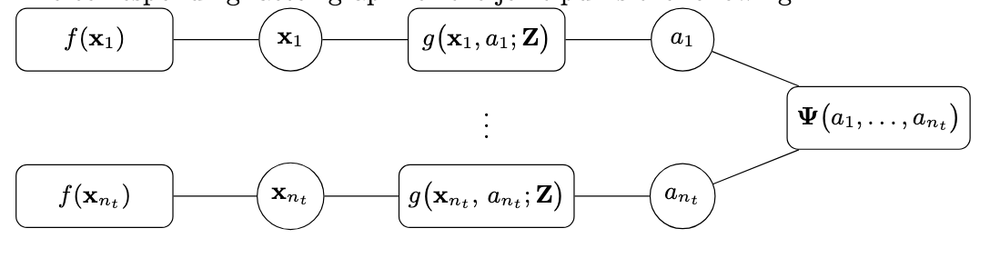
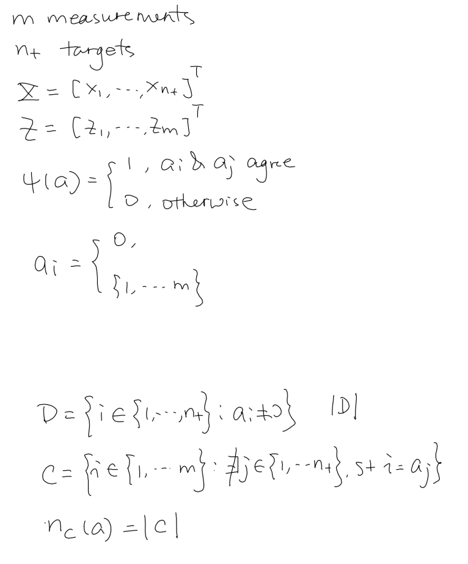
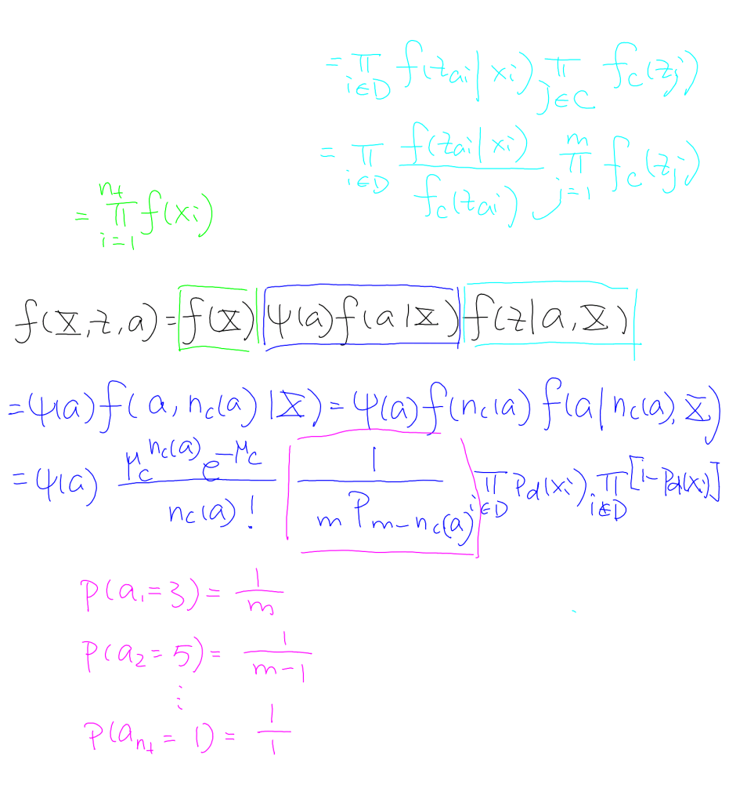
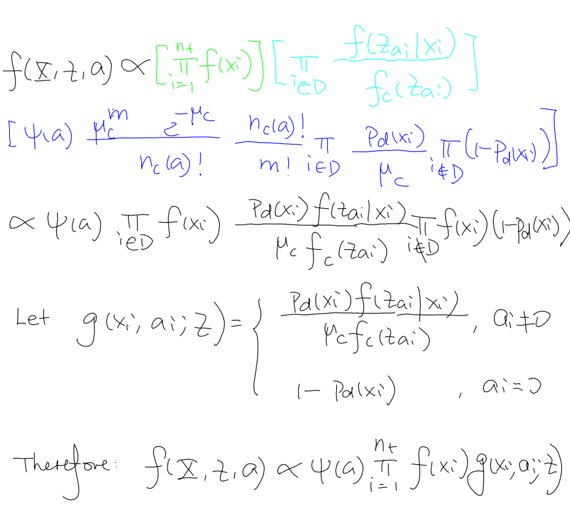
Each object state is augmented with a Bernoulli existence variable, $\boldsymbol{y} = [\boldsymbol{x}, r]^{\mathsf T}$, and every measurement is allowed to start a new potential object:
Prior. $f(\ub{Y}) = \prod_{i=1}^{n_t} f(\ub{y}_i)$.
Measurement term. Three kinds of measurements now: claimed by a legacy target, generated by a new object, or clutter. The same multiply-and-divide trick applies:
$$ f(Z\mid\cdot) = \prod_{i\in\mathcal{D}} f(\boldsymbol{z}_{a_i}\mid\ub{x}_i) \prod_{j\in\mathcal{N}} f(\boldsymbol{z}_j\mid\bar{\boldsymbol x}_j) \prod_{k\in\mathcal{C}} f_c(\boldsymbol{z}_k) = \prod_{i\in\mathcal{D}} \frac{f(\boldsymbol{z}_{a_i}\mid\ub{x}_i)}{f_c(\boldsymbol{z}_{a_i})} \prod_{j\in\mathcal{N}} \frac{f(\boldsymbol{z}_j\mid\bar{\boldsymbol x}_j)}{f_c(\boldsymbol{z}_j)} \prod_{k=1}^{m} f_c(\boldsymbol{z}_k). $$New-object states. Conditioned on the existence pattern, non-existent new objects take a dummy density $f_d$: $f(\ob{X}\mid \bar{\boldsymbol r}) = \prod_{j\in\mathcal{N}} f_n(\bar{\boldsymbol x}_j) \prod_{j\notin\mathcal{N}} f_d(\bar{\boldsymbol x}_j)$.
Association term. Both counts are inserted as functions of the random variables and peeled off; $n_c$ and $n_n$ get independent Poisson priors ($\mu_c$, $\mu_n$); given the counts, the split of the $n_c + n_n$ unclaimed measurements into new objects vs clutter is uniform over $\binom{n_c+n_n}{n_n}$ choices, and the assignment of detected targets to measurements is uniform over ${}_{m}P_{\,m-n_c-n_n} = m!/(n_c+n_n)!$ ordered choices:
$$ \psi(\boldsymbol{a})\, f(\bar{\boldsymbol r}, \boldsymbol{a}\mid\ub{Y}) = \psi(\boldsymbol{a})\, f\bigl(\bar{\boldsymbol r}, \boldsymbol{a}, n_c(\bar{\boldsymbol r},\boldsymbol{a}), n_n(\bar{\boldsymbol r})\mid\ub{Y}\bigr) = \psi(\boldsymbol{a})\, f(n_c)\, f(n_n)\, f(\bar{\boldsymbol r}\mid n_c, n_n, \ub{Y})\, f(\boldsymbol{a}\mid \bar{\boldsymbol r}, n_c, n_n, \ub{Y}) $$ $$ = \psi(\boldsymbol{a})\, f(n_c)\, f(n_n)\; \frac{1}{\binom{n_c+n_n}{n_n}}\; \frac{1}{{}_{m}P_{\,m-n_c-n_n}}\; \prod_{i\in\mathcal{D}} \ub{r}_i P_d(\ub{x}_i) \prod_{i\notin\mathcal{D}} \bigl(1 - \ub{r}_i P_d(\ub{x}_i)\bigr). $$Combine and drop constants. The binomial and permutation denominators merge into $\frac{n_n!\, n_c!}{(n_c+n_n)!}\cdot\frac{(n_c+n_n)!}{m!} = \frac{n_n!\, n_c!}{m!}$, the Poisson factorials cancel, and $\mu_c^{\,n_c} = \mu_c^m / \mu_c^{\,|\mathcal{D}| + n_n}$ distributes one $\mu_c$ under every likelihood ratio:
$$ f(\ub{Y}, \ob{Y}, \boldsymbol{a}, Z) \;\propto\; \psi(\boldsymbol{a}) \prod_{i\in\mathcal{D}} f(\ub{y}_i)\, \frac{\ub{r}_i P_d(\ub{x}_i)\, f(\boldsymbol{z}_{a_i}\mid\ub{x}_i)}{\mu_c\, f_c(\boldsymbol{z}_{a_i})} \prod_{i\notin\mathcal{D}} f(\ub{y}_i)\bigl(1 - \ub{r}_i P_d(\ub{x}_i)\bigr)\; \prod_{j\in\mathcal{N}} \frac{\mu_n f_n(\bar{\boldsymbol x}_j)\, f(\boldsymbol{z}_j\mid\bar{\boldsymbol x}_j)}{\mu_c\, f_c(\boldsymbol{z}_j)} \prod_{j\notin\mathcal{N}} f_d(\bar{\boldsymbol x}_j). $$Local likelihood factors. For legacy potential objects ($\ub{r}_i = 0$ means the object does not exist, so it cannot be detected):
$$ \ub{g}(\ub{x}_i, \ub{r}_i, a_i; Z) = \begin{cases} \dfrac{P_d(\ub{x}_i)\, f(\boldsymbol{z}_{a_i}\mid\ub{x}_i)}{\mu_c\, f_c(\boldsymbol{z}_{a_i})}, & i \in \mathcal{D},\ \ub{r}_i = 1,\\[10px] 1 - P_d(\ub{x}_i), & i \notin \mathcal{D},\ \ub{r}_i = 1,\\[4px] 0, & i \in \mathcal{D},\ \ub{r}_i = 0,\\[4px] 1, & i \notin \mathcal{D},\ \ub{r}_i = 0. \end{cases} $$For new potential objects, let $\mathcal{T} = \{ i \in \{1,\dots,m\} : \exists\, j \text{ s.t. } a_j = i \}$ be the measurements already claimed by legacy targets — a claimed measurement cannot also start a new object:
$$ \bar{g}(\bar{\boldsymbol x}_i, \bar r_i, \boldsymbol{a}; \boldsymbol{z}_i) = \begin{cases} \dfrac{\mu_n f_n(\bar{\boldsymbol x}_i)\,f(\boldsymbol{z}_i\mid\bar{\boldsymbol x}_i)}{\mu_c\, f_c(\boldsymbol{z}_i)}, & i \notin \mathcal{T},\ \bar r_i = 1,\\[10px] 0, & i \in \mathcal{T},\ \bar r_i = 1,\\[4px] f_d(\bar{\boldsymbol x}_i), & \bar r_i = 0. \end{cases} $$Result — scenario 2
$$ f(\ub{Y}, \ob{Y}, \boldsymbol{a}, Z) \;\propto\; \psi(\boldsymbol{a}) \prod_{i=1}^{n_t} f(\ub{y}_i)\, \ub{g}(\ub{y}_i, a_i; Z) \prod_{j=1}^{m} \bar{g}(\ob{y}_j, \boldsymbol{a}; \boldsymbol{z}_j) $$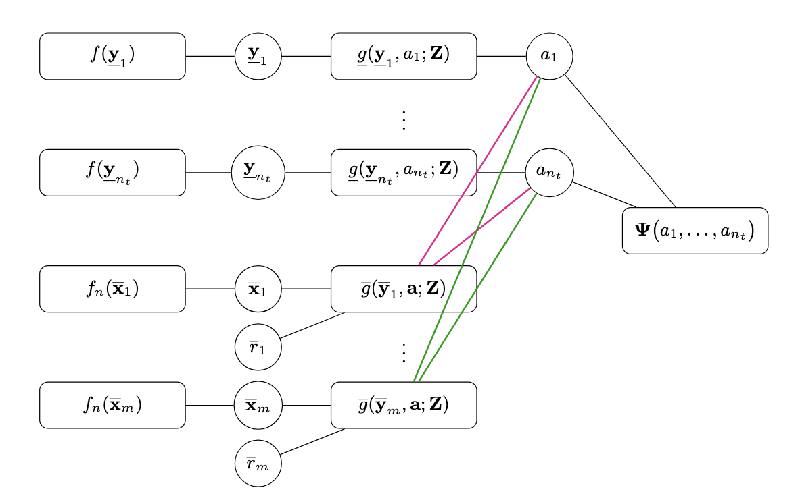
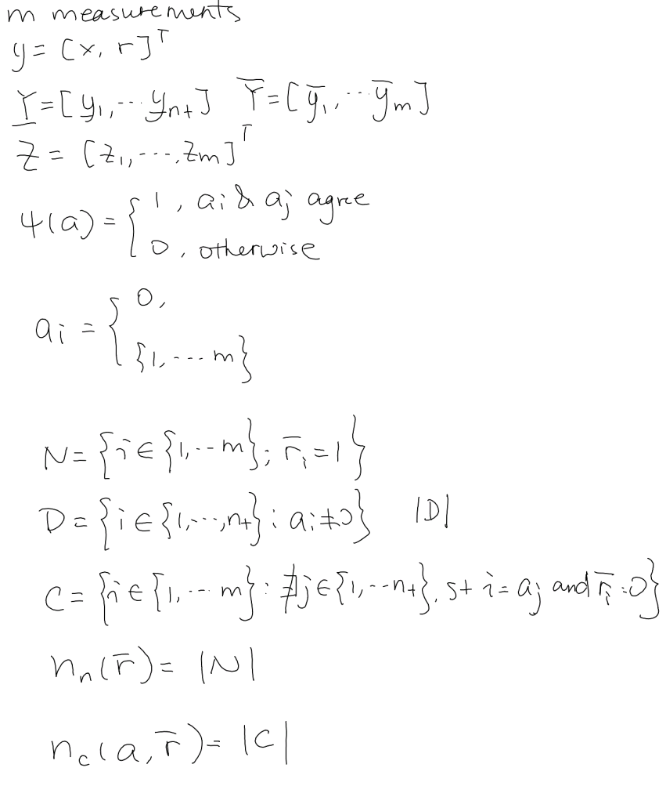
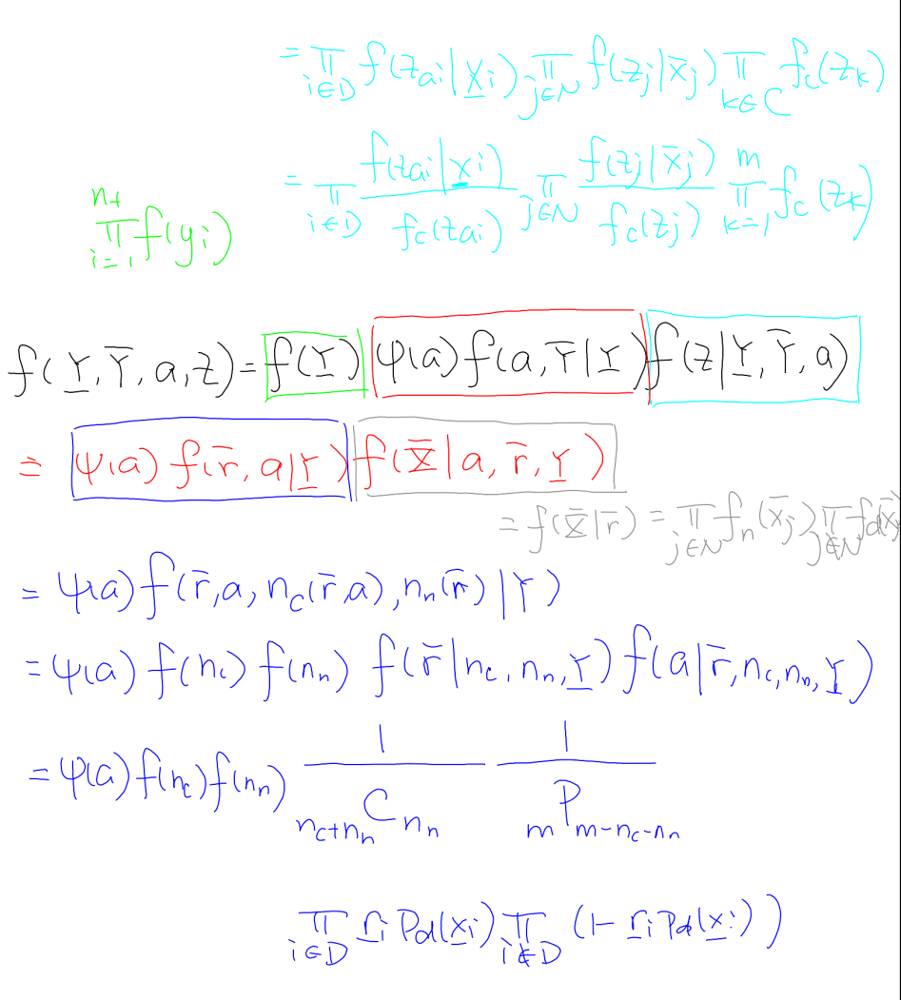
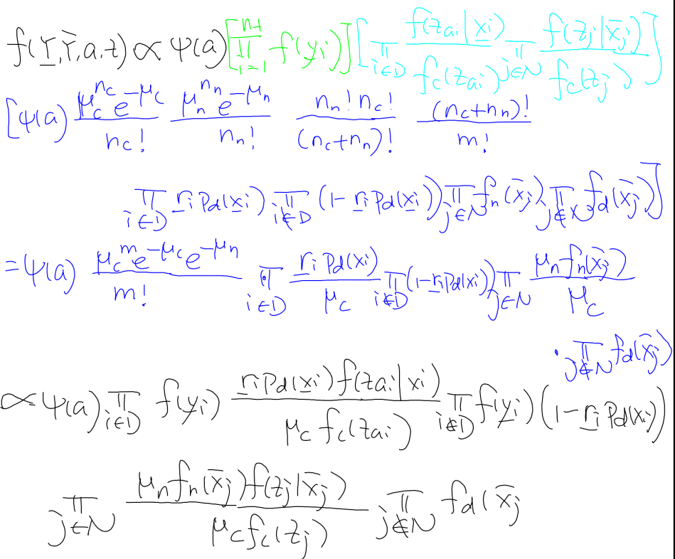
An extended object can generate several measurements per scan, so the association is now measurement-oriented: each measurement points at its source. The state carries an extent, $\boldsymbol{y} = [\boldsymbol{x}, \boldsymbol{e}]^{\mathsf T}$.
Prior. $f(Y) = \prod_{k=1}^{K} f(\boldsymbol{y}_k)$.
Measurement term.
$$ f(Z\mid \boldsymbol{b}, Y) = \prod_{k=1}^{K} \prod_{i\in\mathcal{T}^k} f(\boldsymbol{z}_i\mid\boldsymbol{y}_k) \prod_{j\in\mathcal{C}} f_c(\boldsymbol{z}_j) = \Biggl[\prod_{k=1}^{K} \prod_{i\in\mathcal{T}^k} \frac{f(\boldsymbol{z}_i\mid\boldsymbol{y}_k)}{f_c(\boldsymbol{z}_i)}\Biggr] \prod_{j=1}^{m} f_c(\boldsymbol{z}_j). $$Association term. Insert $n_c(\boldsymbol{b})$, then draw the cells one object at a time: object $k$ chooses which $|\mathcal{T}^k|$ of the still-unassigned $n_c + \sum_{k'=k}^{K}|\mathcal{T}^{k'}|$ measurements are its own, uniformly:
$$ f(\boldsymbol{b}\mid Y) = f\bigl(n_c(\boldsymbol{b})\bigr)\, f\bigl(\boldsymbol{b}\mid n_c(\boldsymbol{b}), Y\bigr) = f\bigl(n_c(\boldsymbol{b})\bigr) \prod_{k=1}^{K} \binom{n_c + \sum_{k'=k}^{K}|\mathcal{T}^{k'}|}{|\mathcal{T}^{k}|}^{-1} f\bigl(|\mathcal{T}^k|\bigr). $$The product of inverse binomials telescopes:
$$ \prod_{k=1}^{K} \frac{|\mathcal{T}^k|!\,\bigl(n_c + \sum_{k'=k+1}^{K}|\mathcal{T}^{k'}|\bigr)!}{\bigl(n_c + \sum_{k'=k}^{K}|\mathcal{T}^{k'}|\bigr)!} = \frac{n_c(\boldsymbol{b})!\,\prod_{k=1}^{K} |\mathcal{T}^k|!}{m!}, $$so that
$$ f(\boldsymbol{b}\mid Y) = f\bigl(n_c(\boldsymbol{b})\bigr)\; \frac{n_c(\boldsymbol{b})!\,\prod_{k=1}^{K}|\mathcal{T}^k|!}{m!}\; \prod_{k=1}^{K} f\bigl(|\mathcal{T}^k|\bigr). $$Combine and drop constants. The cell-size factorials cancel against the Poisson PMFs, $\mu_c^{\,n_c} = \mu_c^m \big/ \prod_k \mu_c^{|\mathcal{T}^k|}$ places one $\mu_c$ under each per-measurement ratio, and $\frac{\mu_c^m e^{-\mu_c}}{m!}\prod_j f_c(\boldsymbol{z}_j)$ is constant:
$$ f(Y, Z, \boldsymbol{b}) \;\propto\; \prod_{k=1}^{K} f(\boldsymbol{y}_k)\, e^{-\mu_m(\boldsymbol{y}_k)} \prod_{i\in\mathcal{T}^k} \frac{\mu_m(\boldsymbol{y}_k)\, f(\boldsymbol{z}_i\mid\boldsymbol{y}_k)}{\mu_c\, f_c(\boldsymbol{z}_i)}. $$Local factors. Define the modified prior and the pairwise factors
$$ g(\boldsymbol{y}_k) = f(\boldsymbol{y}_k)\, e^{-\mu_m(\boldsymbol{y}_k)}, \qquad g_{ki}(\boldsymbol{y}_k, b_i; \boldsymbol{z}_i) = \begin{cases} \dfrac{\mu_m(\boldsymbol{y}_k)\, f(\boldsymbol{z}_i\mid\boldsymbol{y}_k)}{\mu_c\, f_c(\boldsymbol{z}_i)}, & b_i = k,\\[10px] 1, & b_i \neq k. \end{cases} $$Result — scenario 3
$$ f(Y, Z, \boldsymbol{b}) \;\propto\; \prod_{k=1}^{K}\!\left[g(\boldsymbol{y}_k) \prod_{i=1}^{m} g_{ki}(\boldsymbol{y}_k, b_i; \boldsymbol{z}_i)\right] $$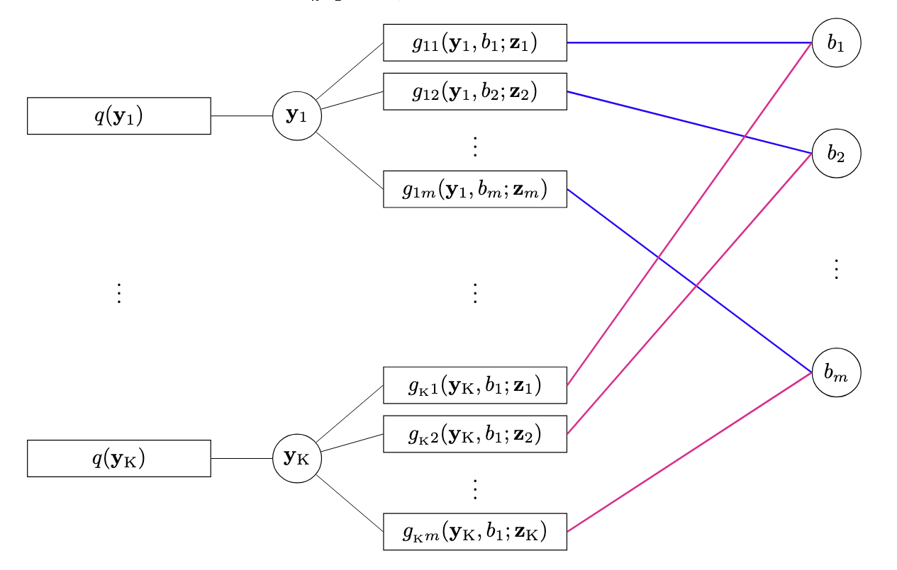
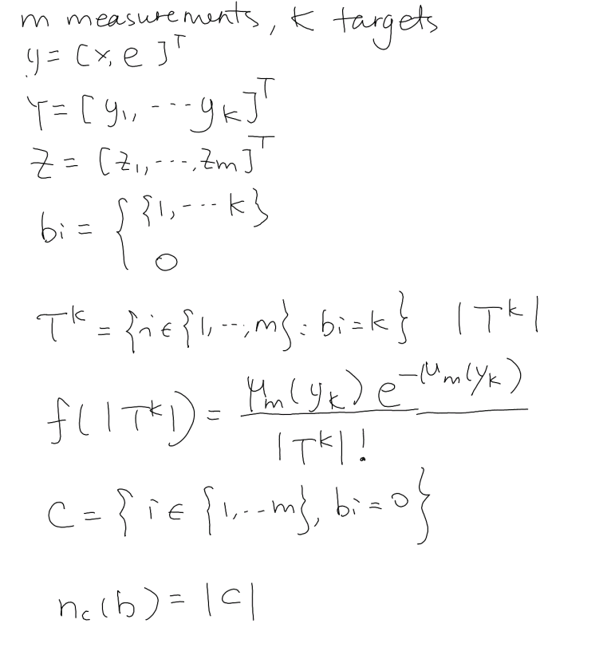
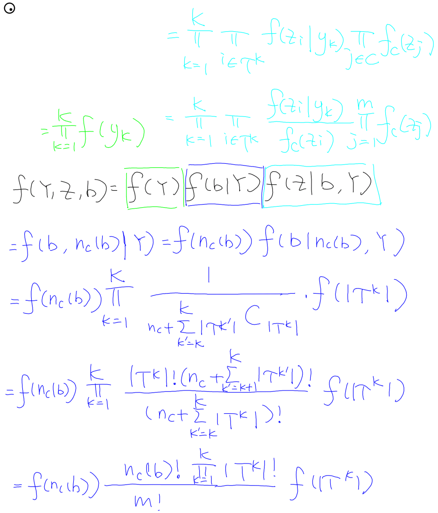
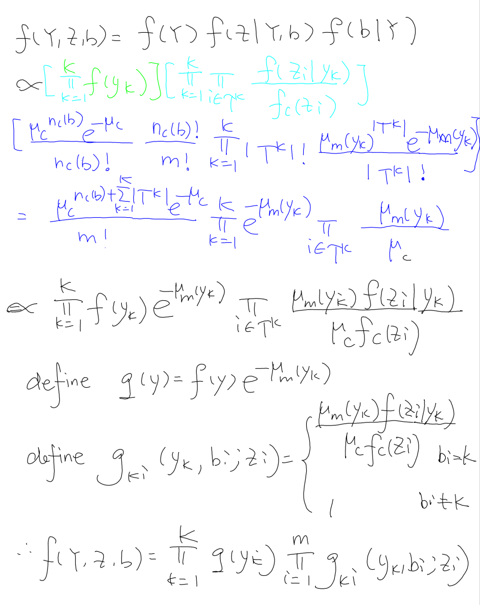
The hardest case, following the construction of Meyer & Williams [3]: extended objects with existence variables, measurement-oriented association, and new objects spawned from measurements. The trick is to introduce a redundant set of auxiliary variables (the newly detected objects and a mapping onto them), derive the joint in that over-complete representation where every conditional is simple, and then marginalize the auxiliaries back out.
where the second line drops every variable that each conditional does not actually depend on. Each factor now has a simple closed form.
Measurement counts. A newly detected object was detected, so its count is a zero-truncated Poisson; existing legacy objects have ordinary Poisson counts; non-existing legacy objects generate nothing ($p(\boldsymbol{l}\mid\cdot)$ factorizes as $p(\tb{l}\mid \overline K, \tb{y})\, p(\ub{l}\mid \ub{y})$):
$$ p(\boldsymbol{l} \mid \overline K, \tb{y}, \ub{y}) = \Biggl(\prod_{k=1}^{\overline K} \frac{\mu_m(\tb{x}_k, \tb{e}_k)^{\tilde l_k}}{\tilde l_k!}\, \frac{e^{-\mu_m(\tb{x}_k, \tb{e}_k)}}{1 - e^{-\mu_m(\tb{x}_k, \tb{e}_k)}}\Biggr) \Biggl(\prod_{k\in\mathcal{D}_{\ub{y}}} \frac{\mu_m(\ub{x}_k, \ub{e}_k)^{l_k}}{l_k!}\, e^{-\mu_m(\ub{x}_k, \ub{e}_k)}\Biggr) \prod_{k\notin\mathcal{D}_{\ub{y}}} \delta(l_k). $$Association given counts. Uniform over all assignments consistent with the cell sizes; the telescoping-binomial identity from scenario 3 gives
$$ p(\tb{b} \mid \boldsymbol{l}, l_{\mathrm{fa}}) = \frac{l_{\mathrm{fa}}!\,\Bigl(\prod_{k=1}^{\underline K + \overline K} l_k!\Bigr)} {\Bigl(l_{\mathrm{fa}} + \sum_{k=1}^{\underline K + \overline K} l_k\Bigr)!}\,, \qquad\text{via}\qquad \prod_{k=1}^{\underline K+\overline K}\binom{l_{\mathrm{fa}} + \sum_{k'=k}^{\underline K+\overline K} l_{k'}}{l_k} = \frac{\bigl(l_{\mathrm{fa}} + \sum_{k=1}^{\underline K+\overline K} l_k\bigr)!} {l_{\mathrm{fa}}!\,\bigl(\prod_{k=1}^{\underline K+\overline K} l_k!\bigr)}\,. $$Mapping. Given $\tb{b}$, the mapping is deterministic: $p(\boldsymbol{\pi} \mid \tb{b}) = \delta(\boldsymbol{\pi} - \boldsymbol{\pi}_{\tb{b}})$.
New POs given the mapping. A new PO that is mapped copies the state and measurement list of its newly detected object; an unmapped one does not exist:
$$ f(\ob{y}, \boldsymbol{b} \mid \tb{b}, \tb{y}, \boldsymbol{\pi}) = \Biggl(\prod_{\substack{k=1\\ \pi(k) \gt 0}}^{M} \bar r_k\, \delta\bigl(\ob{y}_k - \tb{y}_{\pi(k)}\bigr)\, \delta\bigl(\ob{a}_k - \tb{a}_{\pi(k)}\bigr)\Biggr) \prod_{\substack{k=1\\ \pi(k)=0}}^{M} f_d(\ob{x}_k, \ob{e}_k)\,(1 - \bar r_k)\, \delta\bigl(\lVert\ob{a}_k\rVert_1\bigr). $$Priors.
$$ p(l_{\mathrm{fa}}) = \frac{\mu_{\mathrm{fa}}^{\,l_{\mathrm{fa}}}}{l_{\mathrm{fa}}!}\, e^{-\mu_{\mathrm{fa}}}, \qquad f(\tb{y} \mid \overline K) = \prod_{k=1}^{\overline K} \tilde r_k\, f_n(\tb{x}_k, \tb{e}_k), \qquad p(\overline K) = \frac{\mu_n^{\,\overline K}}{\overline K!}\, e^{-\mu_n}. $$Substituting all factors and integrating $\tb{y}$ out — the delta functions $\delta(\ob{y}_k - \tb{y}_{\pi(k)})$ simply transfer each newly detected state onto its new PO:
$$ f(\ob{y}, \boldsymbol{b}, \tb{b}, \boldsymbol{\pi}, \overline K, l_{\mathrm{fa}} \mid \ub{y}) = \int f(\ob{y}, \tb{y}, \boldsymbol{b}, \tb{b}, \boldsymbol{\pi}, \overline K, l_{\mathrm{fa}} \mid \ub{y})\, \mathrm{d}\tb{y} = f(\ob{y}, \boldsymbol{b}, \tb{b} \mid \overline K, \ub{y}, l_{\mathrm{fa}}, \boldsymbol{\pi})\, p(\boldsymbol{\pi}\mid\tb{b})\, p(\overline K)\, p(l_{\mathrm{fa}}) $$with
$$ \begin{aligned} f(\ob{y}, \boldsymbol{b}, \tb{b} \mid \overline K, \ub{y}, l_{\mathrm{fa}}, \boldsymbol{\pi}) ={}& \Biggl(\prod_{\substack{k=1\\ \pi(k) \gt 0}}^{M} \bar r_k\, \frac{\mu_m(\ob{x}_k, \ob{e}_k)^{\tilde l_{\pi(k)}}}{\tilde l_{\pi(k)}!}\, \frac{e^{-\mu_m(\ob{x}_k, \ob{e}_k)}}{1 - e^{-\mu_m(\ob{x}_k, \ob{e}_k)}}\, f_n(\ob{x}_k, \ob{e}_k)\, \delta\bigl(\ob{a}_k - \tb{a}_{\pi(k)}\bigr)\Biggr)\\[2px] &\times \Biggl(\prod_{k\in\mathcal{D}_{\ub{y}}} \frac{\mu_m(\ub{x}_k, \ub{e}_k)^{l_k}}{l_k!}\, e^{-\mu_m(\ub{x}_k, \ub{e}_k)}\Biggr) \Biggl(\prod_{k\notin\mathcal{D}_{\ub{y}}} \delta(l_k)\Biggr) \Biggl(\prod_{\substack{k=1\\ \pi(k)=0}}^{M} f_d(\ob{x}_k, \ob{e}_k)(1 - \bar r_k)\, \delta\bigl(\lVert\ob{a}_k\rVert_1\bigr)\Biggr)\\[2px] &\times \frac{l_{\mathrm{fa}}!\,\Bigl(\prod_{k=1}^{\underline K + \overline K} l_k!\Bigr)} {\Bigl(l_{\mathrm{fa}} + \sum_{k=1}^{\underline K + \overline K} l_k\Bigr)!}\,. \end{aligned} $$$\boldsymbol{\pi}$ collapses by the delta $p(\boldsymbol{\pi}\mid\tb{b}) = \delta(\boldsymbol{\pi} - \boldsymbol{\pi}_{\tb{b}})$, leaving a sum over $\tb{b}$:
$$ f(\ob{y}, \boldsymbol{b}, \overline K, l_{\mathrm{fa}} \mid \ub{y}) = p(\overline K)\, p(l_{\mathrm{fa}}) \sum_{\tb{b}} f\bigl(\ob{y}, \boldsymbol{b}, \tb{b} \mid \overline K, \ub{y}, l_{\mathrm{fa}}, \boldsymbol{\pi}_{\tb{b}}\bigr). $$Every relabeling of the $\overline K$ newly detected objects produces the same $(\ob{y}, \boldsymbol{b})$, so the sum contributes a factor $\overline K!$ and converts $\tilde l_{\pi(k)} \to \bar l_k$, $\mathcal{T}$-indexed products into $\mathcal{D}_{\boldsymbol{b}}$-indexed ones:
$$ \begin{aligned} f(\ob{y}, \boldsymbol{b}, \overline K, l_{\mathrm{fa}} \mid \ub{y}) ={}& p(\overline K)\, p(l_{\mathrm{fa}})\, \frac{\overline K!\; l_{\mathrm{fa}}!\,\Bigl(\prod_{k=1}^{\underline K} l_k!\Bigr)\Bigl(\prod_{k=1}^{M} \bar l_k!\Bigr)} {\Bigl(l_{\mathrm{fa}} + \sum_{k=1}^{\underline K} l_k + \sum_{k'=1}^{M} \bar l_{k'}\Bigr)!} \Biggl(\prod_{k\in\mathcal{D}_{\ub{y}}} \frac{\mu_m(\ub{x}_k, \ub{e}_k)^{l_k}}{l_k!}\, e^{-\mu_m(\ub{x}_k, \ub{e}_k)}\Biggr) \Biggl(\prod_{k\notin\mathcal{D}_{\ub{y}}} \delta(l_k)\Biggr)\\[2px] &\times \Biggl(\prod_{k\in\mathcal{D}_{\boldsymbol{b}}} \bar r_k\, \frac{\mu_m(\ob{x}_k, \ob{e}_k)^{\bar l_k}}{\bar l_k!}\, \frac{e^{-\mu_m(\ob{x}_k, \ob{e}_k)}}{1 - e^{-\mu_m(\ob{x}_k, \ob{e}_k)}}\, f_n(\ob{x}_k, \ob{e}_k)\Biggr) \prod_{k\notin\mathcal{D}_{\boldsymbol{b}}} f_d(\ob{x}_k, \ob{e}_k)(1 - \bar r_k)\, \delta(\bar l_k). \end{aligned} $$Substituting the Poisson priors $p(\overline K)$ and $p(l_{\mathrm{fa}})$ — their factorials $\overline K!$ and $l_{\mathrm{fa}}!$ cancel exactly, $|\mathcal{D}_{\boldsymbol{b}}| = \overline K$ and $l_{\mathrm{fa}} = M - \sum_k l_k - \sum_{k'} \bar l_{k'}$ — gives the conditional prior over new POs, associations, and the measurement count. The measurement values $Z$ have not yet entered:
Conditional-prior result — scenario 4
$$ \begin{aligned} f(\ob{y}, \boldsymbol{b}, M \mid \ub{y}) ={}& \Biggl(\prod_{k\in\mathcal{D}_{\boldsymbol{b}}} \bar r_k\, f_n(\ob{x}_k, \ob{e}_k)\, \mu_m(\ob{x}_k, \ob{e}_k)^{\bar l_k}\, \frac{e^{-\mu_m(\ob{x}_k, \ob{e}_k)}}{1 - e^{-\mu_m(\ob{x}_k, \ob{e}_k)}}\Biggr) \Biggl(\prod_{k\notin\mathcal{D}_{\boldsymbol{b}}} (1 - \bar r_k)\, f_d(\ob{x}_k, \ob{e}_k)\, \delta(\bar l_k)\Biggr)\\[2px] &\times \Biggl(\prod_{k\in\mathcal{D}_{\ub{y}}} \mu_m(\ub{x}_k, \ub{e}_k)^{l_k}\, e^{-\mu_m(\ub{x}_k, \ub{e}_k)}\Biggr) \Biggl(\prod_{k\notin\mathcal{D}_{\ub{y}}} \delta(\ub{l}_k)\Biggr)\, \frac{\mu_n^{\,|\mathcal{D}_{\boldsymbol{b}}|}\; \mu_{\mathrm{fa}}^{\,\bigl(M - \sum_{k=1}^{\underline K} l_k - \sum_{k'=1}^{M} \bar l_{k'}\bigr)}\; e^{-(\mu_n + \mu_{\mathrm{fa}})}}{M!}\,. \end{aligned} $$Distributing the counts over per-measurement factors (each power $\mu_m^{\bar l_k}$ or $\mu_m^{l_k}$ becomes one $\mu_m$ per associated measurement, paired with the likelihood ratio) turns the joint into the standard node/edge potentials of the extended-object BP factor graph:
$$ \bar q(\ob{y}) = \begin{cases} \mu_n\, f_n(\ob{x}, \ob{e})\, \dfrac{e^{-\mu_m(\ob{x}, \ob{e})}}{1 - e^{-\mu_m(\ob{x}, \ob{e})}}, & \bar r = 1,\\[10px] f_d(\ob{x}, \ob{e}), & \bar r = 0, \end{cases} \qquad\qquad \underline q(\ub{y}) = \begin{cases} f^{-}(\ub{y})\, e^{-\mu_m(\ub{x}, \ub{e})}, & \ub{r} = 1,\\[6px] f^{-}(\ub{y}), & \ub{r} = 0, \end{cases} $$Here $f^{-}(\ub y)$ is the predicted augmented-state density, including existence mass and the chosen dummy density when $\ub r=0$. In the multi-scan paper, $\underline q$ is the corresponding pseudo-transition factor, not merely a scalar 1 in the non-existing branch.
with pairwise factors for legacy objects ($k \in \{1,\dots,\underline K\}$, measurement $i$):
$$ \underline g_{ki}(\ub{y}_k, b_i; \boldsymbol{z}_i) = \begin{cases} \dfrac{\mu_m(\ub{x}_k, \ub{e}_k)\, f(\boldsymbol{z}_i \mid \ub{x}_k, \ub{e}_k)}{f_{\mathrm{fa}}(\boldsymbol{z}_i)\,\mu_{\mathrm{fa}}}, & b_i = k,\ \ub{r}_k = 1,\\[10px] 1, & b_i \neq k,\ \ub{r}_k = 1,\\[4px] 1 - \delta(b_i - k), & \ub{r}_k = 0, \end{cases} $$and for new potential objects ($k \in \{1,\dots,M\}$):
$$ \bar g_{k}(\ob{y}_k, b_k; \boldsymbol{z}_k) = \begin{cases} \dfrac{\mu_m(\ob{x}_k, \ob{e}_k)\, f(\boldsymbol{z}_k \mid \ob{x}_k, \ob{e}_k)}{f_{\mathrm{fa}}(\boldsymbol{z}_k)\,\mu_{\mathrm{fa}}}, & b_k = \underline K + k,\ \bar r_k = 1,\\[10px] 0, & b_k \neq \underline K + k,\ \bar r_k = 1,\\[4px] 1 - \delta\bigl(b_k - (\underline K + k)\bigr), & \bar r_k = 0. \end{cases} $$For every later measurement $i\in\{k+1,\dots,M\}$, the same new PO also needs a pairwise factor
$$ \bar h_{ki}(\ob{y}_k,b_i;\boldsymbol z_i)= \begin{cases} \dfrac{\mu_m(\ob{x}_k,\ob{e}_k)f(\boldsymbol z_i\mid\ob{x}_k,\ob{e}_k)} {\mu_{\mathrm{fa}}f_{\mathrm{fa}}(\boldsymbol z_i)}, & b_i=\underline K+k,\ \bar r_k=1,\\[10px] 1, & b_i\neq\underline K+k,\ \bar r_k=1,\\[4px] 1-\delta\bigl(b_i-(\underline K+k)\bigr), & \bar r_k=0. \end{cases} $$Thus the single-scan, measurement-conditioned factorization has the structure
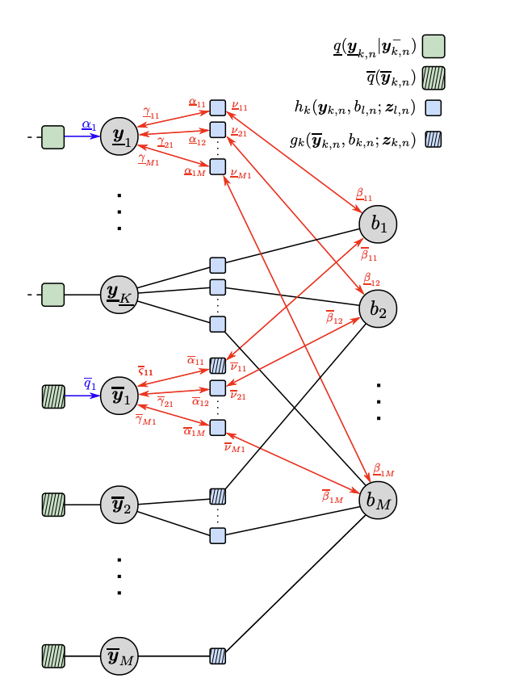
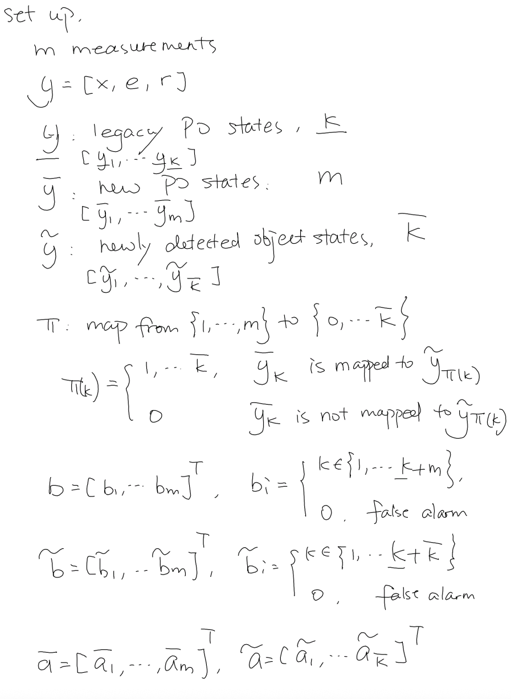
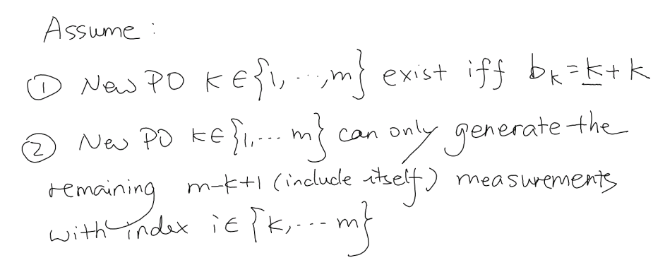
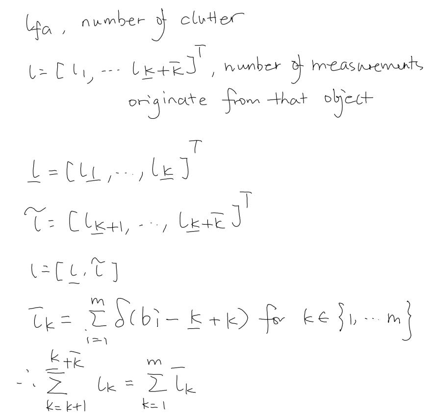
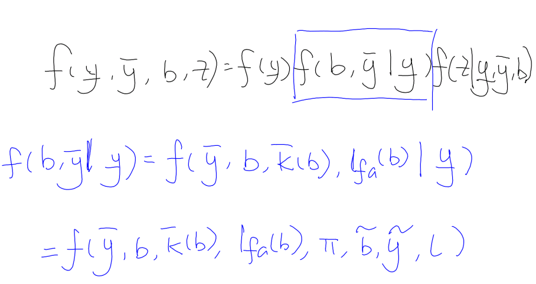
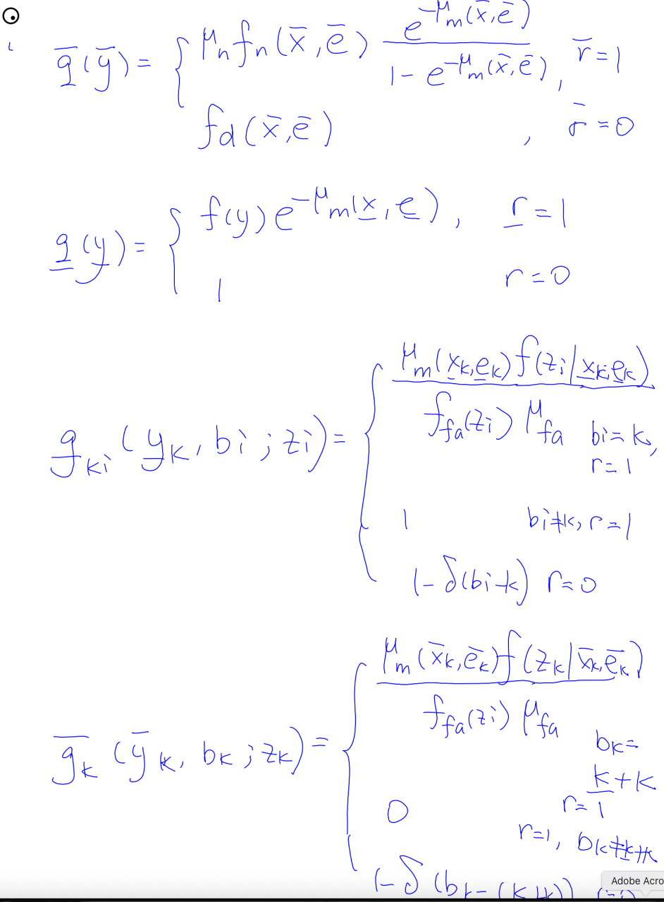
Appendix I · Eqs. (A.1)–(A.9) · Open these slides →
Appendix I of EO_Writing_Long_Version adds an alternative for extended objects with an unknown count: precluster the detections, then associate whole groups. The time index is omitted, as in the source.
There are $n^t$ legacy components and $n^g$ newborn components, one newborn candidate per group, rather than one per raw detection. Each state contains kinematics $\boldsymbol x$, extent $\boldsymbol E$, and existence $r$. A fixed grouping can contain many groups. The one-group special case is $n^g=1$, not $m=1$.
This is Eq. (A.1), eq:pt_legacy_prior, with the display shorthand $s=(\boldsymbol x,\boldsymbol E)$. The source assumes a product previous posterior and independent transitions to obtain the predicted product prior.
$a^p=j$ means legacy target $p$ generates the whole group $j$. The variable $b^j=p$ records the same event from the group side. Crucially, $b^j=0$ means not generated by a legacy target, so the group may be clutter or a newly detected target.
Each target generates at most one group and each group contains measurements from only one source. The pairwise indicators enforce exclusive legacy associations. The newborn factor below additionally rules out a newborn in a group already claimed by a legacy target. On these feasible hypotheses, define the three count sets as in the appendix:
As in the source footnote, dependence on the fixed partition $\mathcal P=\mathcal C(\boldsymbol Z)$ is suppressed. The appendix first writes this chain-rule structure, then approximates the association and group-likelihood contributions. The following display shorthands $B$, $L_{\mathrm L}$, $L_{\mathrm N}$, $F_c$, and $R_j$ distinguish terms that share the symbol $f$ in the source. They do not change its factors.
$\mu_g$ is the mean number of clutter groups after preclustering. It is not generally the raw clutter-detection mean $\mu_c$. The parameter $\mu_n$ is the mean number of detected newborns. No undetected-intensity substitution is made in this variant.
Conditioned on the counts, the source uses a uniform choice of newborn groups among the unclaimed groups and a uniform ordered assignment of detected legacy targets:
The product cancels the $n^c!$ and $n^n!$ in the Poisson terms. The remaining denominator is $n^g!$, not $m!$. The newborn state-density contribution is
With those factors, the appendix’s intermediate association expression is
A legacy group carries one $e^{-\mu_m(s)}$ for the entire group. A newborn is already detected by assumption, so the appendix uses the zero-truncated factor $1/[1-e^{-\mu_m(s)}]$. The clutter group is represented by the product of its spatial clutter densities. These are the appendix’s conventions, not a substituted raw-PPP clutter intensity per point.
For fixed observations and fixed model parameters, $C$ is independent of the target states, existence variables, and associations. It may therefore be removed when normalizing that scan’s posterior. It is not removable without reconsideration when comparing partition hypotheses or estimating $\mu_g$ or $\mu_n$.
Expanding $R_a(s)$ gives exactly eq:legacy_l_function. The group contributes one $1/\mu_g$, regardless of its size. A null assignment for an existing target has weight $e^{-\mu_m(s)}$. A nonexistent target has weight one only for a null assignment and cannot explain a group.
Expanding $R_j(s)$ gives eq:new_l_function. Both $\mu_n f_n(s)$ and the zero-truncation denominator remain inside the birth factor. A claimed group forces this newborn component to have $r=0$. The dummy branch $f_d$ integrates to one.
This is eq:final_joint_pdf_local_factors, retaining the source’s $\approx$. For an observed grouped scan, normalize the product on the right to obtain the posterior of the chosen approximate conditional model. The unknown number of represented targets is inferred through all legacy and newborn existence indicators, not set equal to $n^g$.
The appendix excludes clustering splits and cross-target merges. BP resolves the remaining group-to-target ambiguity but cannot undo those preprocessing errors. The appendix does not specify a clustering algorithm or a calibration rule for the induced clutter-group count. The selected clustering method supplies the partition before association begins.
The likelihood-ratio form requires $\mu_g>0$ and $f_c(\boldsymbol z)>0$ at the observed points. The zero-truncated newborn expression is evaluated on states with positive detection probability. Its factors are retained as an approximate observed-group model, not presented as a proof of normalization over arbitrary group sizes.
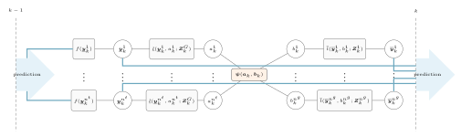
The central box abbreviates $\boldsymbol\psi(\boldsymbol a_k,\boldsymbol b_k)=\prod_{p=1}^{n^t}\prod_{j=1}^{n^g}\Psi_{p,j}(a_k^p,b_k^j)$. Each legacy state has its predicted prior and local likelihood factor. Each group has a newborn state and local likelihood factor; the newborn density is already included in that factor. The observation-only constant $C$ is omitted from the graph.
View the factor-graph slide → · Original TikZ source
Source: unaltered Appendix I LaTeX excerpt. See the equation-label and source-line map.
| Scenario | Association | Extra variables | Factorized joint (up to constants) |
|---|---|---|---|
| S1 point, known $n$ | target-oriented $a_i$, consistency $\psi(\boldsymbol{a})$ | — | $\psi(\boldsymbol{a}) \prod_i f(\boldsymbol{x}_i)\, g(\boldsymbol{x}_i, a_i; Z)$ |
| S2 point, unknown $n$ | target-oriented $a_i$, consistency $\psi(\boldsymbol{a})$ | existence $r$; one new PO per measurement | $\psi(\boldsymbol{a}) \prod_i f(\ub{y}_i)\,\ub{g}(\ub{y}_i, a_i; Z) \prod_j \bar g(\ob{y}_j, \boldsymbol{a}; \boldsymbol{z}_j)$ |
| S3 extended, known $n$ | measurement-oriented $b_i$ (no $\psi$ needed) | Poisson measurement rate $\mu_m(\boldsymbol{y})$ | $\prod_k g(\boldsymbol{y}_k) \prod_i g_{ki}(\boldsymbol{y}_k, b_i; \boldsymbol{z}_i)$ |
| S4 extended, unknown $n$ | measurement-oriented $b_i$ | existence $r$; auxiliary $\tb{y}, \tb{b}, \boldsymbol{\pi}$ marginalized out | $\prod_k \underline q(\ub y_k)\prod_i\underline g_{ki}\;\cdot\;\prod_k\bar q(\ob y_k)\bar g_k\prod_{i>k}\bar h_{ki}$ |
| GrBP extended, preclustered | target-to-group $a^p$ and group-to-legacy $b^j$ | fixed partition; existence; one newborn candidate per group | $C\,\boldsymbol\psi(\boldsymbol a,\boldsymbol b)\prod_p[f(\underline{\boldsymbol y}^p)\underline l_p]\prod_j\overline l_j$ (approximate joint model) |
Two axes of difficulty, two tools. Unknown object number is handled by augmenting states with existence variables and letting each measurement propose a new object. Extended objects are handled by flipping the association direction (measurement-oriented) and giving each object a Poisson measurement count — at the cost, in S4, of a detour through an over-complete representation that is marginalized back out. GrBP instead fixes a preclustered partition and applies exclusive group-to-target association under the appendix’s approximate clutter-group model.